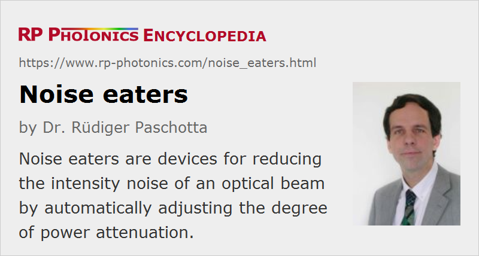

Noise Eaters
Definition: devices for reducing the intensity noise of an optical beam by automatically adjusting the degree of power attenuation
German: Rauschunterdrücker
Categories: photonic devices, fluctuations and noise
How to cite the article; suggest additional literature
Author: Dr. Rüdiger Paschotta
A noise eater is a device made for reducing the intensity noise in a laser beam. The principle of operation is that the optical power is reduced with an electrically controllable attenuator, and the control signal is derived from the input power (feedforward scheme) or the output power (feedback scheme) as measured with, e.g., a photodiode. Essentially, the attenuation is increased when the power is measured to be too high, and vice versa. This makes it possible to stabilize the laser power, i.e., to decrease intensity noise.
The most common approach is that based on an electronic feedback loop, e.g. of a PID type. An electro-optic modulator can be used to control the power throughput with a high servo bandwidth. Proper design of the feedback electronics is vital for achieving effective noise suppression over a large bandwidth. Alternatively, it is possible to use a feedforward method.
Suppliers
The RP Photonics Buyer's Guide contains 4 suppliers for noise eaters.
Questions and Comments from Users
Here you can submit questions and comments. As far as they get accepted by the author, they will appear above this paragraph together with the author’s answer. The author will decide on acceptance based on certain criteria. Essentially, the issue must be of sufficiently broad interest.
Please do not enter personal data here; we would otherwise delete it soon. (See also our privacy declaration.) If you wish to receive personal feedback or consultancy from the author, please contact him e.g. via e-mail.
By submitting the information, you give your consent to the potential publication of your inputs on our website according to our rules. (If you later retract your consent, we will delete those inputs.) As your inputs are first reviewed by the author, they may be published with some delay.
See also: laser noise, intensity noise, stabilization of lasers, optical attenuators
and other articles in the categories photonic devices, fluctuations and noise
|  |
If you like this page, please share the link with your friends and colleagues, e.g. via social media:
These sharing buttons are implemented in a privacy-friendly way!